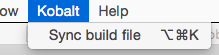

How to install and use the Kobalt IDEA plug-in.
Open the "Plugins" section of the IDEA preferences and find the "Kobalt" plug-in. Install it and restart IDEA. If the plug-in was correctly installed, you should see a new menu called "Kobalt" juste before the "Help" menu:

The Kobalt IDEA plug-in offers the following features:
Since Kobalt's build files are valid Kotlin files, you can leverage IDEA's auto complete feature to assist you in writing build files. There are two steps to take to enable this support:
Build.kt file.
Now that your Build.kt file is recognized by IDEA, you can use Ctrl-space to trigger auto completion whenever you need help figuring out what functions you can invoke. However, by default, IDEA will display all the Kotlin functions available within a given scope. While all these functions are valid and will produce a valid Kotlin file, you are probably going to prever Kobalt directives over regular Kotlin functions, so the Kobalt IDEA plug-in will re-order the suggestions so that Kobalt's directives appear first. Compare the next two screen shots:
When you select the "Synchronize build file" menu item from the Kobalt main menu, the Kobalt IDEA plug-in will locate your Build.kt file and parse it. Then it will update your modules' library and dependency information to reflect all the dependencies declared in your build file.
For example, the following list of dependencies:
dependencies {
compile("org.apache.ant:ant:1.7.0",
"junit:junit:4.10",
"org.beanshell:bsh:2.0b4",
"com.google.inject:guice:4.0:no_aop",
"com.beust:jcommander:1.48",
"org.yaml:snakeyaml:1.15")
}
will update your project structure as follows:
The plug-in will honor other types of dependencies, such as provided or test. For example:
dependencies {
compile("org.apache.ant:ant:1.7.0")
test("org.testng:testng:6.9.8")
provided("com.beust:jcommander:1.48")
}
will produce the following libraries and dependencies:
The source code for the Kobalt IDEA plug-in can be found on github. The license is Apache 2.0.